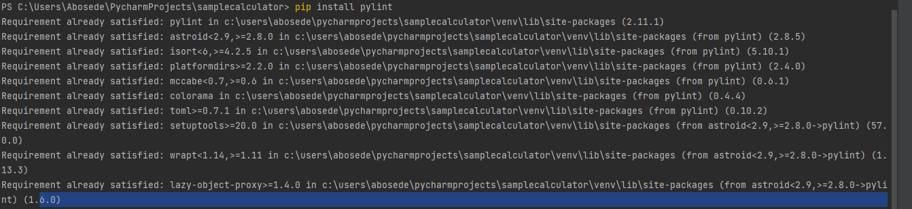
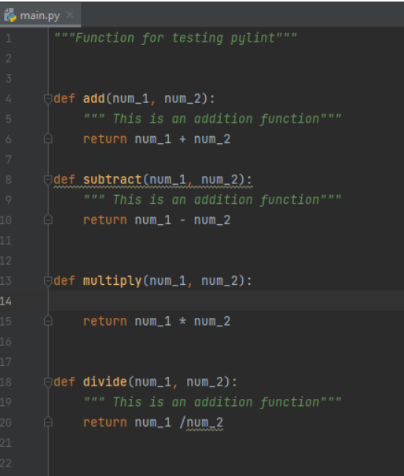
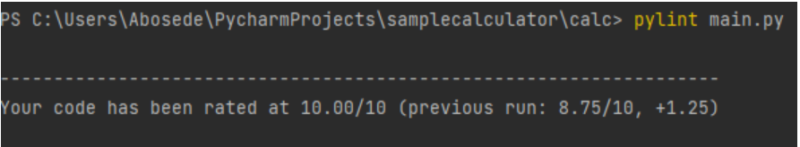

What is Pylint?
For a new programmer writing codes can be frustrating if you do not have pointers to show why you are getting errors or how you can fix the errors. This tutorial will be introducing you to one of python's tools that can help point out bugs in your codes and suggest ways to debug. The tool is called pylint. Pylint is one of the programming linters used to inspect python code, identify the issues, and suggest automated ways to meet the minimum quality standard. It also ensures that python codes meet Python's PEP8 style guide (see link for more information).
How to install pylint?
- Pylint can be installed on different IDEs by running the code below in your working environment terminal
- pip install pylint
I will be using pyCharm to illustrate how pylint installation works
Image 1.1
This message indicates that pylint already exists in my working environment
If you install it for the first time, it will say pylint is successfully installed.
Lets see how pylint works?
I will be using a simple calculator program to explain how pylint works.
Image 1.2
Using the command pylint main.py(you will notice that main.py is the name of my python file) as shown in image 1.3 below. It showed that my code scored a 7.50/10 and pointed out that, on line 21,there is a trailing whitespace and line 13 has a missing a function docstring.

Image 1.3
Note that pylint could not tell that the descriptions in the docstrings in lines 9 and 19 were incorrect, but it could tell that line 14 was missing a docstring. Hence, pylint is not 100% perfect at telling errors in a code but a very necessary tool for writing a quality code.
After following the suggestions and re-running pylint the score improved of 10/10 meaning that my code got a +1.25 bump on my second re-run after the previous 7.50/10 score. See image below in image 1.4.
Image 1.4
Some Object Oriented Programming terms to keep in mind are:
-
Class
A class is like an object constructor, it is a blueprint for creating objects. It is a guide for creating objects. To create a class in python we use the keyword class.
For more information click
-
Constructor
The constructor initializes the values of objects in a class. The constructor example below, assigns values, first_num and second_num to the class calculator object created above using the __init__() function. For more information click
-
Class method
A class method is a method that is bound to the class and not the objects in the class. So for instance in my example below, my function start can modify every instance in my class Calculator. click
-
Instantiation
Instantiation is creating new objects from a class. For more information click
-
Object
According to study.com, an object is a component of a program that knows how to perform certain actions and how to interact with other elements of the program. It is the basic unit of object- oriented programming. For more information click
-
Namespace
It is a system that has a unique name for each and every object in python. for more information click
-
Fixture
Fixtures are functions that will run before each test function that it is applied to. For more information click
-
Type hint
Type hint tells the type of argument that should/will be passed into a variable. click
-
Type cast
This is when a data type is converted from one type to another. For more information click
-
Unit test
It is testing individual components of a software program or application. This is done to ensure that all individual parts are working as intended. For more information click
-
Static
Static methods are methods that are bound to a class rather than its object.They do not require a class instance creation. Hence, they are independent of the class object click
-
Factory
Factory Method is a design for creating patterns used to create concrete implementations of a common interface. click
-
Facade
Facade is a structural design pattern that provides a simplified (but limited) interface to a complex system of classes. It also moves unwanted dependencies to one place. For more information, click
-
Design patterns
According to geeksforgeeks.com website, design patterns is the most essential part of Software Engineering, as they provide the general repeatable solution to a commonly occurring problem in software design. They usually represent some of the best practices adopted by experienced object-oriented software developers. For more information click
-
Property
Property in object oriented programming can refer to the attributes of a defined class click